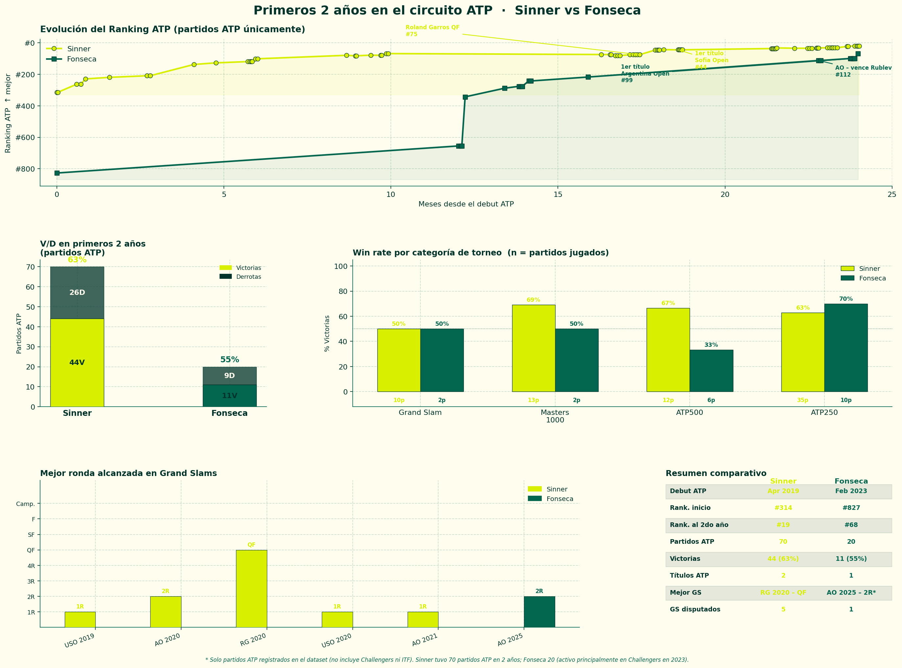

Jannik Sinner y Joao Fonseca son dos de los jóvenes más prometedores del tenis moderno. Pero cuando se comparan sus inicios, la pregunta no es quién es mejor hoy — sino qué tan parecidos o distintos fueron sus primeros dos años en el circuito.
Tomamos todos los partidos de ambos en sus primeros 24 meses desde el debut ATP y los comparamos en victorias, categoría de torneos y rendimiento en Grand Slams.

La evolución del ranking
Quizás la diferencia más llamativa está en la trayectoria del ranking. Sinner arrancó su carrera casi exclusivamente en el circuito ATP — su base challenger fue breve. Fonseca, en cambio, pasó su primer año entero en challengers antes de aparecer con fuerza en el ATP.
Por eso la comparación de ranking es más justa desde el debut challenger de cada uno. Sinner pasó de #546 a #32 en dos años. Fonseca de #839 a #60 — con menos partidos ATP pero una progresión igualmente explosiva.

Los números
Sinner
70
partidos ATP en 2 años
Fonseca
20
partidos ATP en 2 años
Sinner
2
títulos ATP
Fonseca
1
título ATP (Argentina Open)
La diferencia en partidos ATP (70 vs 20) no refleja que Fonseca haya jugado menos — refleja que pasó su primer año entero en challengers, algo que Sinner no hizo en la misma medida. Si se incluye el circuito challenger, las trayectorias se parecen mucho más.
El momento Fonseca
En el Australian Open 2025, Fonseca — rankeado #112 — venció a Andrey Rublev, entonces número 9 del mundo. Fue el partido que lo puso en el mapa mundial. Unos meses después ganó el Argentina Open, su primer título ATP, con apenas 18 años.
Sinner también tuvo su momento de catapulta: el Roland Garros 2020, donde llegó a cuartos de final con 18 años y un ranking de #75. Dos meses después ganó su primer título ATP en Sofía.